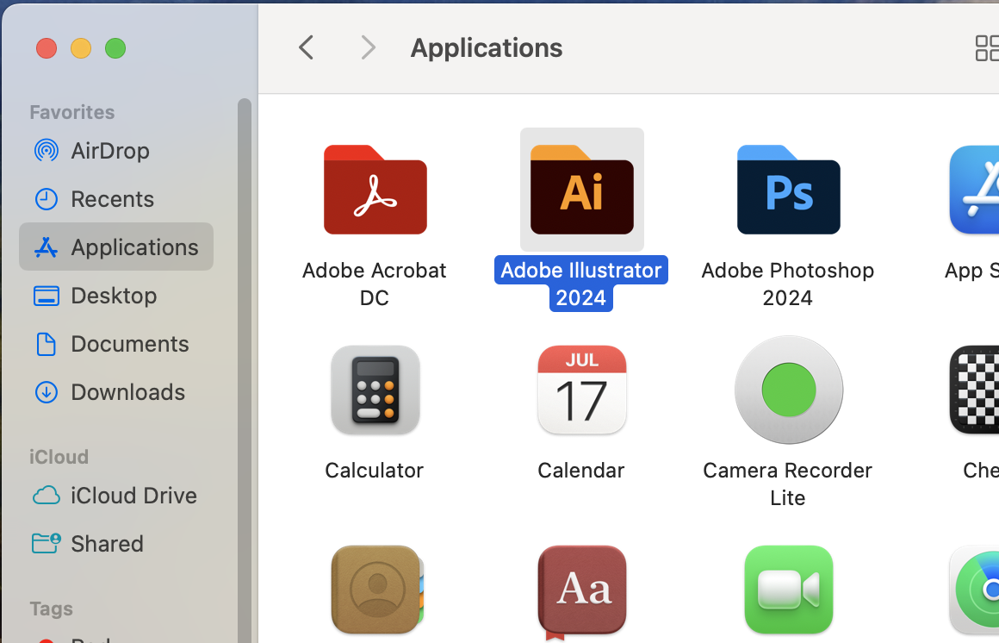
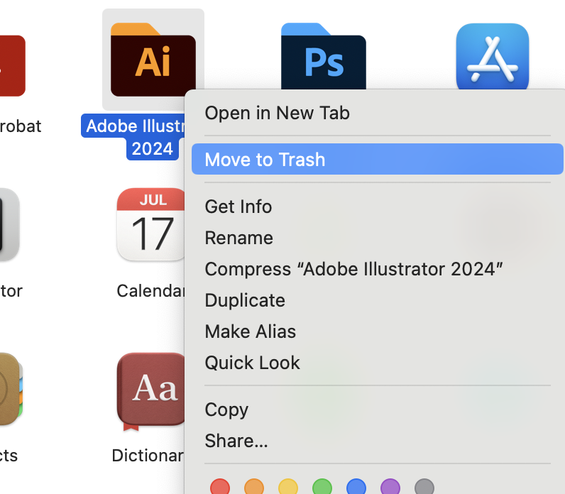
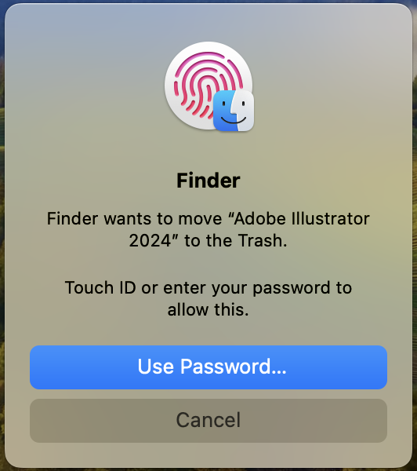
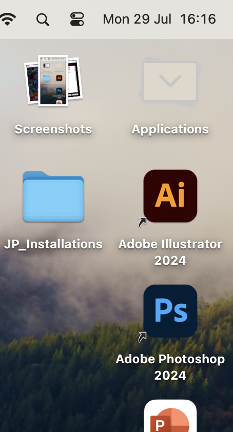
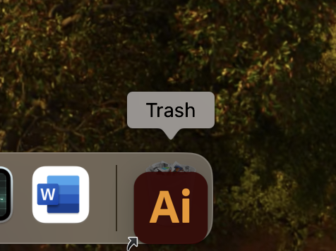
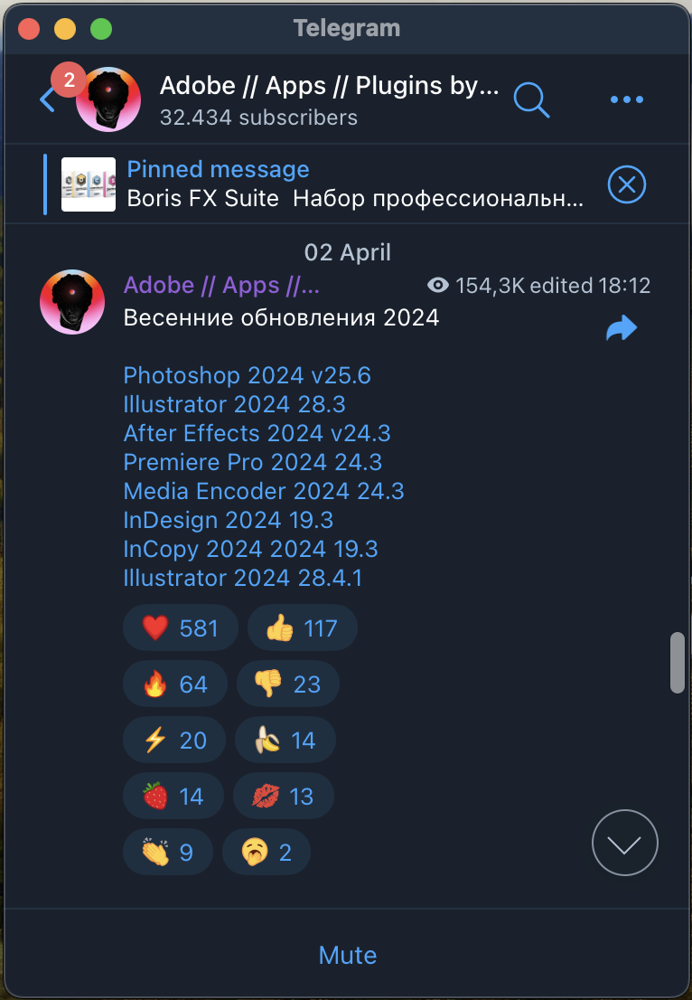
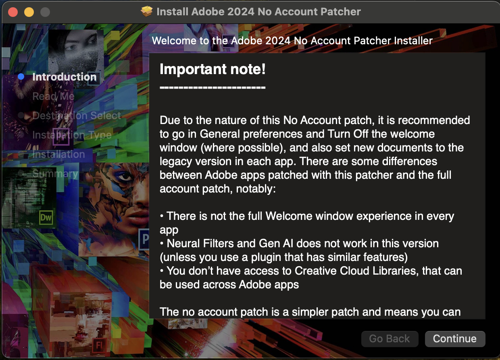

Algum Software do Adobe parou de funcionar?
Nos sistemas macOS isto é normal para quem utiliza programas
crackeados.
Infelizmente, será necessário ficar reinstalando sempre que for preciso.
Algumas vezes eles duraram mais,
outras menos tempo sem ser necessário reinstalar.
Não se preocupe!
O processo de instalação é extremamente simples de ser realizado!
___________________________________________________________________________
↘️ Siga o Passo-a-Passo a baixo para ter uma nova versão ↙️
Pode ser que você não precise do passo 1 ( Desinstalar ), mas mesmo assim leia-o!
⚠️ Isso pode previnir a perda de arquivos importantes seus ou
pacotes-externos instalados na versão antiga!
___________________________________________________________________________
-
Desinstale o Programa antigo
Pode ser que o programa antigo ainda esteja instalado, independente se ele não funciona mais.
Mas em alguns casos, além de parar de funcionar, o próprio sistema ja desinstala ele, pois
o Adobe indica ao macOS que este software apresenta risco ao sistema (por ser crackeado)!-
Acesse o local "Applications" do Finder"
No exemplo abaixo vamos desinstalar o Adobe Illustrator
Você pode encontra-lo na barra lateral a esquerda do Finder.
-
Mover o Diretório Completo do Software para a Lixeria
Observe que é o Diretório, a pasta do software que será apagado.

🛑ATENÇÃO:
Dentro do diretório do software, encontramos diversas pastas e arquivos nativos ou que você
utilizou e instalou anteriormente...
...como diferentes Fontes e Texturas baixadas externamente e que depois foram atribuídas ao
programa por meio alguma destas pastas.
⚠️ então lembre-se de salva-las para adiciona-las a nova versão que instalaremos. -
Autorizar com Senha ou Digital a Exclusão
Para excluir o Diretório completo, isto é, para apagar o App, é necessário dar a autorização ao

sistema. -
Remova o Atalho do Programa do Desktop
Para finalizar então, tudo que falta é remover o atalho deste programa da área de trabalho caso você o
 
tivesse colocado la.
Ele não some automaticamente após a exclusão do software, você precisa ir la resolver.
________________________________________
________________________________________
________________________________________
________________________________________
-
-
Obter a Lista de Downloads
Acesse o seguinte grupo do Telegram e deixe-o salvo, assim você sempre terá acesso
às novas versões:
 Monter Group Channel
Monter Group Channel
Será necessário criar uma conta no Telegram caso você ainda não tenha. Basta ter um número de celular para isso!
Neste canal, os desenvolvedores ficaram atualizando a última mensagem com todos os links das novas versões!
Atente-se ao versionamento disponível de programas por lá, e se correspondem aos seus atuais ou não.
Eles atualizam links mensalmente e até semalmente.
Se o seu programa esta dando problema e o versionamento no chat ainda é o mesmo, é sinal de que um novo ainda não foi publicado ali!Exemplo de como a lista fica no canal do Telegram deles:
Observe que la em cima do lado direito desta mensagem, à uma indicação de que ela foi
editada, exatamente conforme eu expliquei acima sobre as atualizações constantes de mensagens deste canal.Sempre que precisar, neste canal, busque pelos programas que você deseja instalar, aqui estes
desenvolvedores (Monter Group) passam apenas alguns de seus softwares, se você deseja algum outro,
talvez seja recomendado buscar la no AppsTorrent EUA ou Russo assim como faremos com o Acrobat e Office. -
Instalação da Nova Versão
Atualmente, tenho mantido a "Biblioteca" de versões baixadas e utilizadas recentemente esta ficando neste local:
Desktop / JP_Installations / arqvsInstaladores / Softwares_Adobe_MonterGroup / 28 july / ...
Mas, caso deseje, pode mudar o local, mas eu vou perguntar isso da
próxima vez que for tentar arrumar outra coisa!
0.9 - Falar sobre a compactação para o armazenamento
1. Passo a passo do que fazer ao abrir a imagem do disco
1.1 - Qual icone clicar (2 prints)
1.2 - "Clicar 2 vezes para Executar" -> Específicar isso
2. Passo a passo durante a instalação
2.1 - Aqui é a parte onde geralmente as coisas acontecem errado quando algo esta para acontecer, então se
algo aconteceu durante a instalação, você provavelmente tera de esperar os Desenvolvedores da Monter
Group postarem outra versão dos Softwares.
3. Selecionar o idioma desejado para o programa.
4. Após instalar mostrar o Diretório Criado.
4.1 - Falar que é possivel instalar Fontes e Texturas manualmente nos programas por meio destas pastas
5. Mostrar na Área de trabalho que devemos "Ejetar" a imagem do "Disco" ("Armazenamento Fictício")
5.1 - Para enfim fechar aquela telinha
6. RELEMBRAR sobre a compactação do arquivo desta iso (Imagem do Disco)
6.1 - Relembrar que é legal manter uma biblioteca para versionamentos e possiveis
tentativas futuras em alguma necessidade desesperada
7. A pagina que irá abrir
8. Lembrar de Arrastar um Atalho para o Desktop ---- TALVEZ ESTE SEJA MAIS PARA CIMA
9. Falar sobre tentar instalar qualquer um dos No_Acount_Patcher, que vieram junto com o "Adobe Acrobat" (imagem abaixo)
9.1 - Falar sobre tentar buscar por novas versões deste "Mini-Software" (complemento) e que isso pode
previnir possiveis erros futuros. 9.2 - Se for buscar, tentar achar da própria Monter Group
...
100. Criar uma página somente para o MANUAL de INSTRUÇÕES do "Monter Group"

Eu deveria colocar o texto mostrado no primeira pagina do instalador do No_User_Patcher
Instalar o "Clipy" neste computador para facilitar e melhorar o historico de "ctrl C + ctrl V"
Mais sobre ele em meus ultimos chats do Chat GPT